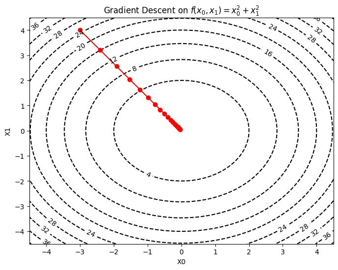
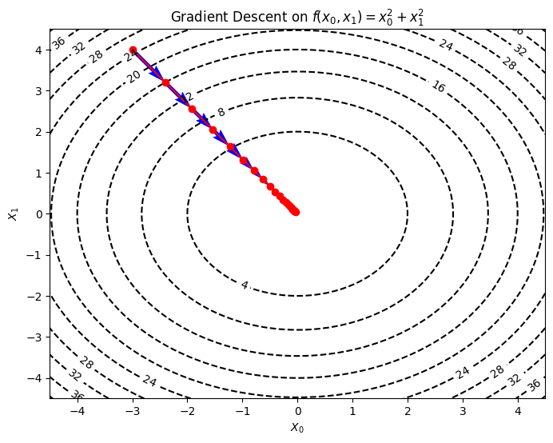
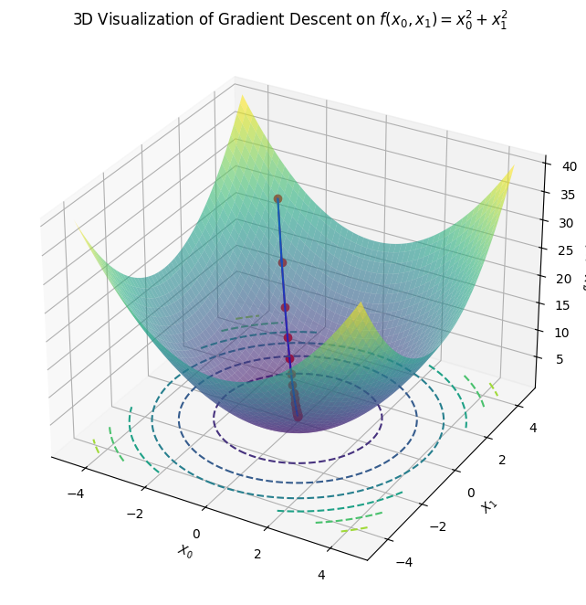

import numpy as np
import matplotlib.pyplot as plt
# 関数定義
def function_f(x):
return x[0]**2 + x[1]**2
# 勾配
def numberical_gradient(f, x, h=1e-5):
grad = np.zeros_like(x) # xと同じ形状の配列を生成
for idx in range(x.size):
# f(x+h)の計算
tmp_val = x[idx]
x[idx] = tmp_val + h
fxh1 = f(x)
# f(x-h)の計算
x[idx] = tmp_val - h
fxh2 = f(x)
grad[idx] = (fxh1 - fxh2) / (2 * h)
x[idx] = tmp_val # 値を元に戻す
return grad
# Run gradient descent
# 勾配降下法の実装
def gradient_descent(f, init_x, lr=0.01, num_iterations=100):
x = init_x
x_history = [x.copy()]
for i in range(num_iterations):
grad = numberical_gradient(f, x)
x -= lr * grad
x_history.append(x.copy())
return np.array(x_history)
# Parameters
init_x = np.array([-3.0, 4.0])
lr = 0.1
num_iterations = 20
x_history = gradient_descent(function_f, init_x, lr, num_iterations)
# 可視化
x = np.linspace(-4.5, 4.5, 200)
y = np.linspace(-4.5, 4.5, 200)
X, Y = np.meshgrid(x, y)
Z = X**2 + Y**2
plt.figure(figsize=(8, 6))
contour = plt.contour(X, Y, Z, levels=10, colors='black', linestyles='dashed')
plt.clabel(contour)
plt.plot(x_history[:, 0], x_history[:, 1], 'o-', color='red')
plt.xlim(-4.5, 4.5)
plt.ylim(-4.5, 4.5)
plt.xlabel("X0")
plt.ylabel("X1")
plt.title("Gradient Descent on $f(x_0, x_1) = x_0^2 + x_1^2$")
plt.show()

# Parameters
init_x = np.array([-3.0, 4.0])
lr = 0.1
num_iterations = 20
# Run gradient descent
x_history = gradient_descent(function_f, init_x, lr, num_iterations)
# 可視化
x = np.linspace(-4.5, 4.5, 200)
y = np.linspace(-4.5, 4.5, 200)
X, Y = np.meshgrid(x, y)
Z = X**2 + Y**2
plt.figure(figsize=(8, 6))
contour = plt.contour(X, Y, Z, levels=10, colors='black', linestyles='dashed')
plt.clabel(contour)
# Adding arrows for each gradient
for i in range(1, len(x_history)):
plt.quiver(x_history[i-1][0], x_history[i-1][1],
x_history[i][0]-x_history[i-1][0],
x_history[i][1]-x_history[i-1][1],
angles="xy", scale_units="xy", scale=1, color="blue")
plt.plot(x_history[:, 0], x_history[:, 1], 'o-', color='red')
plt.xlim(-4.5, 4.5)
plt.ylim(-4.5, 4.5)
plt.xlabel("$X_0$")
plt.ylabel("$X_1$")
plt.title("Gradient Descent on $f(x_0, x_1) = x_0^2 + x_1^2$")
plt.show()

import numpy as np
import matplotlib.pyplot as plt
from mpl_toolkits.mplot3d import Axes3D
from mpl_toolkits.mplot3d.art3d import Poly3DCollection
# 既に定義済みのfunction_fとnumberical_gradientを利用します。
# 勾配降下法の実装
def gradient_descent(f, init_x, lr=0.01, num_iterations=100):
x = init_x
x_history = [x.copy()]
for i in range(num_iterations):
grad = numberical_gradient(f, x)
x -= lr * grad
x_history.append(x.copy())
return np.array(x_history)
# Parameters
init_x = np.array([-3.0, 4.0])
lr = 0.1
num_iterations = 20
# Run gradient descent
x_history = gradient_descent(function_f, init_x, lr, num_iterations)
# 3D Visualization
x = np.linspace(-4.5, 4.5, 200)
y = np.linspace(-4.5, 4.5, 200)
X, Y = np.meshgrid(x, y)
Z = X**2 + Y**2
fig = plt.figure(figsize=(10, 8))
ax = fig.add_subplot(111, projection='3d')
ax.plot_surface(X, Y, Z, cmap='viridis', alpha=0.6)
ax.contour(X, Y, Z, zdir='z', offset=0, cmap='viridis', linestyles='dashed')
# Plotting the path of gradient descent
Z_history = np.array([function_f(x) for x in x_history])
ax.plot(x_history[:, 0], x_history[:, 1], Z_history, 'o-', color='red')
# Adding arrows for each gradient in 3D
for i in range(1, len(x_history)):
ax.quiver(x_history[i-1][0], x_history[i-1][1], Z_history[i-1],
x_history[i][0]-x_history[i-1][0],
x_history[i][1]-x_history[i-1][1],
Z_history[i]-Z_history[i-1],
color="blue", arrow_length_ratio=0.05)
ax.set_title("3D Visualization of Gradient Descent on $f(x_0, x_1) = x_0^2 + x_1^2$")
ax.set_xlabel("$X_0$")
ax.set_ylabel("$X_1$")
ax.set_zlabel("$f(X_0, X_1)$")
plt.show()

class NeuralNetwork(nn.Module):
def __init__(self, n_in, n_units_1, n_units_2, n_out):
super(NeuralNetwork, self).__init__()
self.l1 = nn.Linear(n_in, n_units_1) # First hidden layer
self.l2 = nn.Linear(n_units_1, n_units_2) # Second hidden layer
self.l3 = nn.Linear(n_units_2, n_out) # Output layer
def forward(self, x):
h1 = F.relu(self.l1(x))
h2 = F.relu(self.l2(h1))
y = F.log_softmax(self.l3(h2), dim=1)
return y
---------------------------------------------------------------------------
NameError Traceback (most recent call last)
Cell In[5], line 1
----> 1 class NeuralNetwork(nn.Module):
2 def __init__(self, n_in, n_units_1, n_units_2, n_out):
3 super(NeuralNetwork, self).__init__()
NameError: name 'nn' is not defined
import torch
from sklearn import datasets
from sklearn.model_selection import train_test_split
from sklearn.preprocessing import StandardScaler
# データの読み込み
iris = datasets.load_iris()
data = iris.data
# 入力データとターゲットデータの準備
X = data[:, :-1] # sepal length, sepal width, petal length
y = data[:, -1] # petal width
# データの分割
X_train, X_temp, y_train, y_temp = train_test_split(X, y, test_size=0.4, random_state=42)
X_val, X_test, y_val, y_test = train_test_split(X_temp, y_temp, test_size=0.5, random_state=42)
# データをテンソルに変換
X_train = torch.tensor(X_train, dtype=torch.float32)
y_train = torch.tensor(y_train, dtype=torch.float32)
X_val = torch.tensor(X_val, dtype=torch.float32)
y_val = torch.tensor(y_val, dtype=torch.float32)
X_test = torch.tensor(X_test, dtype=torch.float32)
y_test = torch.tensor(y_test, dtype=torch.float32)
import torch.nn as nn
import torch.nn.functional as F
class RegressionNN(nn.Module):
def __init__(self, input_dim, hidden_dim1, hidden_dim2):
super(RegressionNN, self).__init__()
self.fc1 = nn.Linear(input_dim, hidden_dim1)
self.fc2 = nn.Linear(hidden_dim1, hidden_dim2)
self.fc3 = nn.Linear(hidden_dim2, 1)
def forward(self, x):
x = F.relu(self.fc1(x))
x = F.relu(self.fc2(x))
return self.fc3(x)
# ハイパーパラメータ
learning_rate = 0.01
epochs = 2000
hidden_dim1 = 10
hidden_dim2 = 5
# モデルと最適化のインスタンス化
model = RegressionNN(input_dim=3, hidden_dim1=hidden_dim1, hidden_dim2=hidden_dim2)
criterion = nn.MSELoss()
optimizer = torch.optim.Adam(model.parameters(), lr=learning_rate)
# 学習ループ
for epoch in range(epochs):
# フォワードパス
outputs = model(X_train)
loss = criterion(outputs, y_train)
# バックワードパス
optimizer.zero_grad()
loss.backward()
optimizer.step()
# 検証
model.eval()
with torch.no_grad():
val_outputs = model(X_val)
val_loss = criterion(val_outputs, y_val)
model.train()
# 50エポックごとに損失を表示
if (epoch+1) % 50 == 0:
print(f"Epoch [{epoch+1}/{epochs}], Train Loss: {loss.item():.4f}, Val Loss: {val_loss.item():.4f}")
/opt/anaconda3/envs/jupyterbook/lib/python3.10/site-packages/torch/nn/modules/loss.py:535: UserWarning: Using a target size (torch.Size([90])) that is different to the input size (torch.Size([90, 1])). This will likely lead to incorrect results due to broadcasting. Please ensure they have the same size.
return F.mse_loss(input, target, reduction=self.reduction)
/opt/anaconda3/envs/jupyterbook/lib/python3.10/site-packages/torch/nn/modules/loss.py:535: UserWarning: Using a target size (torch.Size([30])) that is different to the input size (torch.Size([30, 1])). This will likely lead to incorrect results due to broadcasting. Please ensure they have the same size.
return F.mse_loss(input, target, reduction=self.reduction)
Epoch [50/2000], Train Loss: 0.5703, Val Loss: 0.7367
Epoch [100/2000], Train Loss: 0.5666, Val Loss: 0.7372
Epoch [150/2000], Train Loss: 0.5638, Val Loss: 0.7327
Epoch [200/2000], Train Loss: 0.5614, Val Loss: 0.7290
Epoch [250/2000], Train Loss: 0.5594, Val Loss: 0.7258
Epoch [300/2000], Train Loss: 0.5579, Val Loss: 0.7232
Epoch [350/2000], Train Loss: 0.5570, Val Loss: 0.7213
Epoch [400/2000], Train Loss: 0.5565, Val Loss: 0.7201
Epoch [450/2000], Train Loss: 0.5563, Val Loss: 0.7195
Epoch [500/2000], Train Loss: 0.5563, Val Loss: 0.7192
Epoch [550/2000], Train Loss: 0.5562, Val Loss: 0.7190
Epoch [600/2000], Train Loss: 0.5562, Val Loss: 0.7189
Epoch [650/2000], Train Loss: 0.5562, Val Loss: 0.7189
Epoch [700/2000], Train Loss: 0.5562, Val Loss: 0.7189
Epoch [750/2000], Train Loss: 0.5562, Val Loss: 0.7189
Epoch [800/2000], Train Loss: 0.5562, Val Loss: 0.7189
Epoch [850/2000], Train Loss: 0.5562, Val Loss: 0.7189
Epoch [900/2000], Train Loss: 0.5562, Val Loss: 0.7189
Epoch [950/2000], Train Loss: 0.5562, Val Loss: 0.7189
Epoch [1000/2000], Train Loss: 0.5562, Val Loss: 0.7189
Epoch [1050/2000], Train Loss: 0.5563, Val Loss: 0.7189
Epoch [1100/2000], Train Loss: 0.5562, Val Loss: 0.7190
Epoch [1150/2000], Train Loss: 0.5562, Val Loss: 0.7189
Epoch [1200/2000], Train Loss: 0.5562, Val Loss: 0.7189
Epoch [1250/2000], Train Loss: 0.5562, Val Loss: 0.7189
Epoch [1300/2000], Train Loss: 0.5565, Val Loss: 0.7171
Epoch [1350/2000], Train Loss: 0.5562, Val Loss: 0.7191
Epoch [1400/2000], Train Loss: 0.5562, Val Loss: 0.7189
Epoch [1450/2000], Train Loss: 0.5562, Val Loss: 0.7189
Epoch [1500/2000], Train Loss: 0.5562, Val Loss: 0.7189
Epoch [1550/2000], Train Loss: 0.5562, Val Loss: 0.7189
Epoch [1600/2000], Train Loss: 0.5566, Val Loss: 0.7235
Epoch [1650/2000], Train Loss: 0.5562, Val Loss: 0.7191
Epoch [1700/2000], Train Loss: 0.5562, Val Loss: 0.7189
Epoch [1750/2000], Train Loss: 0.5562, Val Loss: 0.7189
Epoch [1800/2000], Train Loss: 0.5562, Val Loss: 0.7189
Epoch [1850/2000], Train Loss: 0.5562, Val Loss: 0.7189
Epoch [1900/2000], Train Loss: 0.5562, Val Loss: 0.7189
Epoch [1950/2000], Train Loss: 0.5562, Val Loss: 0.7189
Epoch [2000/2000], Train Loss: 0.5562, Val Loss: 0.7188
import matplotlib.pyplot as plt
model.eval()
with torch.no_grad():
test_predictions = model(X_test)
# データをnumpy形式に変換
y_test_np = scaler_y.inverse_transform(y_test.numpy())
test_predictions_np = scaler_y.inverse_transform(test_predictions.numpy())
# scatter plotの可視化
plt.scatter(y_test_np, test_predictions_np)
plt.xlabel("Actual Petal Width")
plt.ylabel("Predicted Petal Width")
plt.title("Actual vs. Predicted Petal Width")
plt.plot([min(y_test_np), max(y_test_np)], [min(y_test_np), max(y_test_np)], color='red')
plt.show()
---------------------------------------------------------------------------
NameError Traceback (most recent call last)
/Users/ryozawau/css_nlp/notebook/NN_supp.ipynb セル 9 line 4
<a href='vscode-notebook-cell:/Users/ryozawau/css_nlp/notebook/NN_supp.ipynb#X11sZmlsZQ%3D%3D?line=1'>2</a> from sklearn.preprocessing import StandardScaler
<a href='vscode-notebook-cell:/Users/ryozawau/css_nlp/notebook/NN_supp.ipynb#X11sZmlsZQ%3D%3D?line=2'>3</a> scaler = StandardScaler()
----> <a href='vscode-notebook-cell:/Users/ryozawau/css_nlp/notebook/NN_supp.ipynb#X11sZmlsZQ%3D%3D?line=3'>4</a> model.eval()
<a href='vscode-notebook-cell:/Users/ryozawau/css_nlp/notebook/NN_supp.ipynb#X11sZmlsZQ%3D%3D?line=4'>5</a> with torch.no_grad():
<a href='vscode-notebook-cell:/Users/ryozawau/css_nlp/notebook/NN_supp.ipynb#X11sZmlsZQ%3D%3D?line=5'>6</a> test_predictions = model(X_test)
NameError: name 'model' is not defined